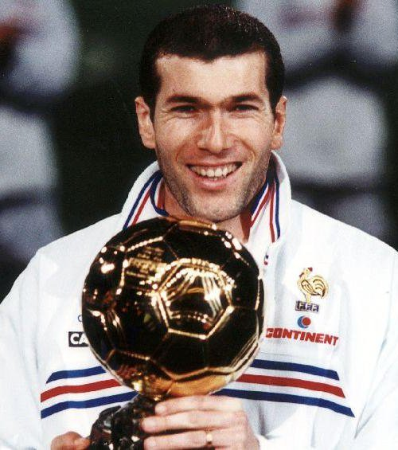
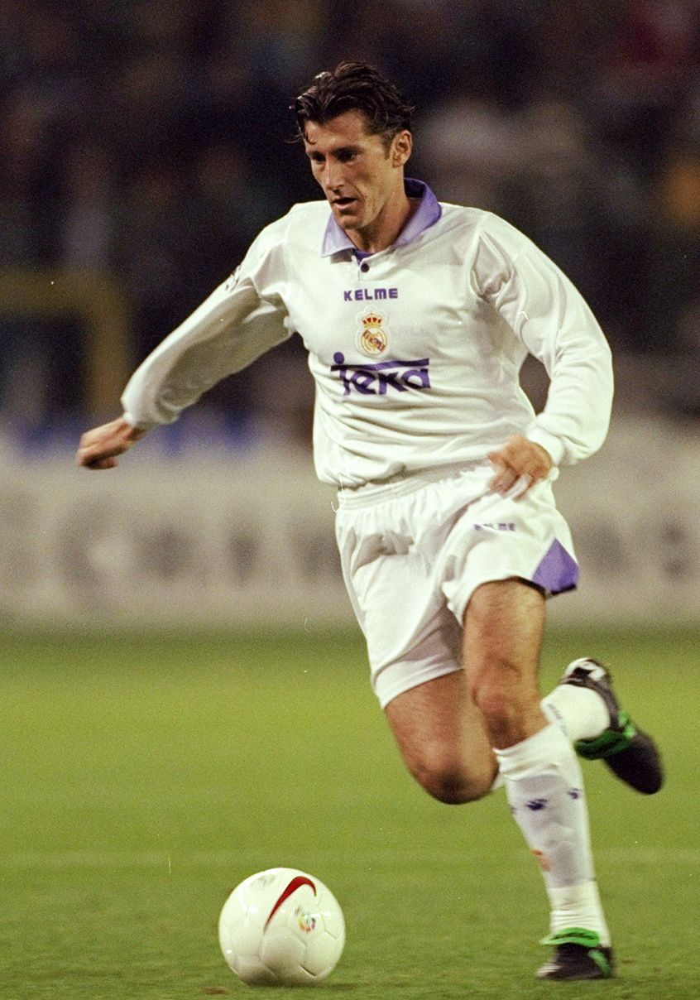
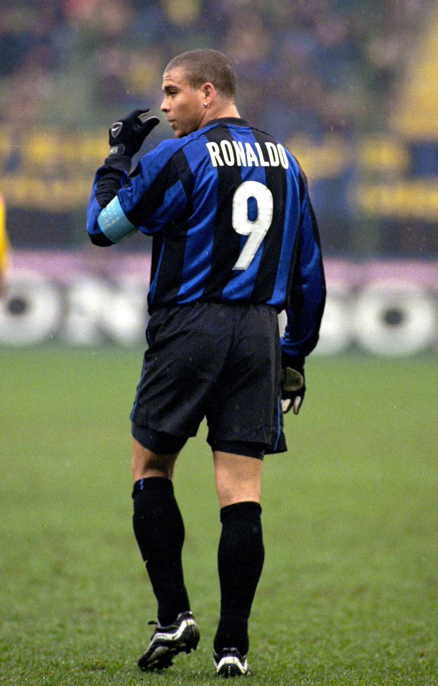

Zinédine ZIDANE - 1998

- Un surdoué qui a pris son temps
Considéré comme l'un des meilleurs joueurs de l'histoire du football et véritable icône du football français
Zidane
remporte le Ballon d'Or en 1998, l'année dans laquelle il soulève la coupe du monde, une première pour l'équipe de France.
Nationalité : Française
Né le : 23 juin 1972, à Marseille (Bouches-du-Rhône)
Taille : 1,87
Poids : 81 kg
Poste : milieu
Clubs : US Saint-Henri Marseille (1982), SO Septèmes-les-Vallons (1983-1987), Cannes (1987-1992), Bordeaux (1992-1996), Juventus Turin (1996-2001) et Real Madrid (depuis 2001)
Palmarès : Coupe du monde 1998 ; Championnat d'Europe des nations 2000 ; Coupe Intercontinentale des clubs 1996 et 2002 ; Supercoupe d'Europe 1996 et 2002 ; Ligue des champions 2002 ; Championnat d'Italie 1997 et 1998 ; Championnat d'Espagne 2003 ; Supercoupe d'Italie 1997 ; Supercoupe d'Espagne 2001 et 2003
Bilan en club : 689 matchs, 125 buts
Bilan en équipe de France : 93 sélections A, 26 buts (1994-2004)
Bilan en phase finale de Coupe du monde : 3 participations (1er en 1998, 2ème en 2006), 6 matches, 6 buts (1998-2002)
Palmarès Ballon d'Or : vainqueur en 1998 (2e en 2000 ; 3e en 1997)
Classement du Ballon d’Or France Football 1998 :
Zinédine Zidane (France / Juventus Turin),
244 pts.

Davor Suker (Croatie / Real Madrid),
68 pts.

Ronaldo (Brésil / Inter Milan),
66 pts.
Retour à l'accueil
 Zinédine ZIDANE - 1998
Zinédine ZIDANE - 1998